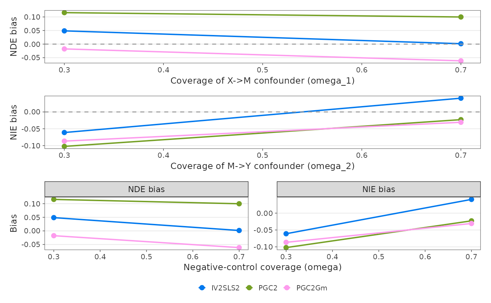

Produces a 4-panel figure comparing PGC2, PGC2Gm, and IV2SLS2 as negative-control coverage of each path's confounder composite (omega_1, omega_2) drops. This is the coverage-axis analogue of the instrument-violation degradation surface: it shows how bias accumulates as the proxy panel captures less of the confounder.
Usage
plot_nc_coverage_comparison(
omega1_sweep,
omega2_sweep,
t1e_omega2 = NULL,
file = NULL,
width = 10,
height = 12
)Arguments
- omega1_sweep
Summary from
sweep_mediation_param("omega_1", ...): a list with$summary(columnsparam_value,method,NDE_bias,NIE_bias).- omega2_sweep
Same, sweeping
omega_2.- t1e_omega2
Result of
sweep_mediation_null_by_conf(...)run across anomega_2grid: a data frame with columnsomega_2,method,NIE_type1. IfNULL, Panel D is omitted.- file
Optional file path to save the figure.
- width
Figure width in inches.
- height
Figure height in inches.
Details
Panels: (A) NDE bias vs omega_1, (B) NIE bias vs omega_2, (C) NDE/NIE bias vs omega (both paths), (D) NIE Type I error vs omega_2.
Examples
# Toy sweeps standing in for sweep_mediation_param("omega_1"/"omega_2", ...)
mk <- function() {
s <- expand.grid(param_value = c(0.3, 0.7),
method = c("IV2SLS2", "PGC2", "PGC2Gm"))
s$NDE_bias <- rnorm(nrow(s), 0, 0.05)
s$NIE_bias <- rnorm(nrow(s), 0, 0.05)
list(summary = s)
}
plot_nc_coverage_comparison(mk(), mk())
